La Ola Cinema Club
From the collection
Melania
“Sometimes the strangest part is remembering this is real life”
Melania follows the twenty days leading up to the 2025 presidential inauguration, but our biggest takeaway was how bizarre the whole experience felt. It’s a trippy watch—not because it’s a fantasy, but because this is an actual person’s life unfolding around an enormous public event.
There’s curiosity in that. You’re watching a world most people will never experience, and that alone gives you something to take in. But finding something interesting isn’t the same as loving the movie built around it. That’s where this landed for us: curious about what we were watching, without coming away particularly impressed.
The strangeness is what sticks. It’s a film we’d describe as an experience more readily than a recommendation—something that held our curiosity, but didn’t turn that curiosity into a stronger connection.
From the Brain
Interesting to watch, but a bizarre experience
From the Heart
Trippy, strange, and not quite a win

Not For UsIt may find its people. This time, we were not those people.